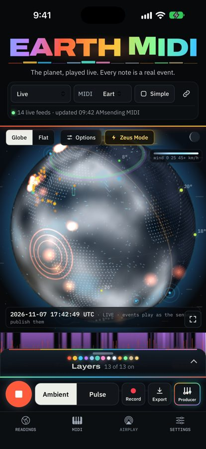
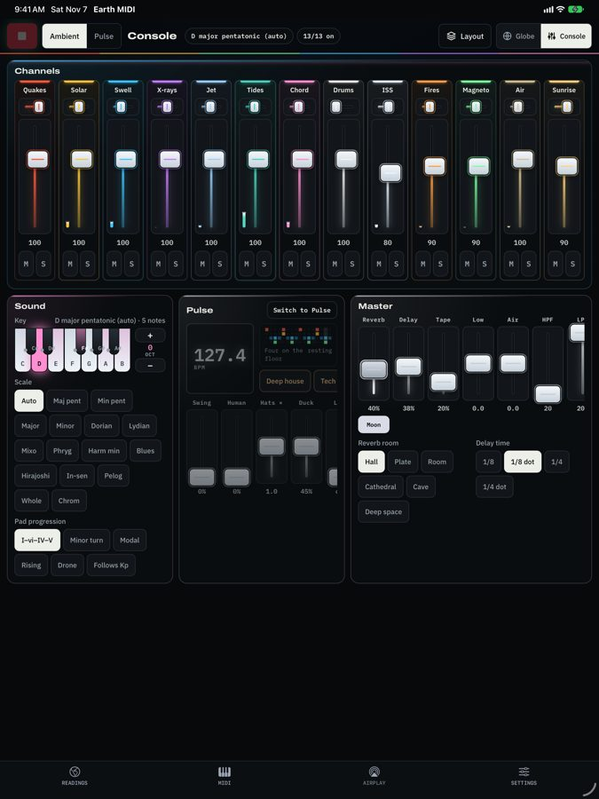
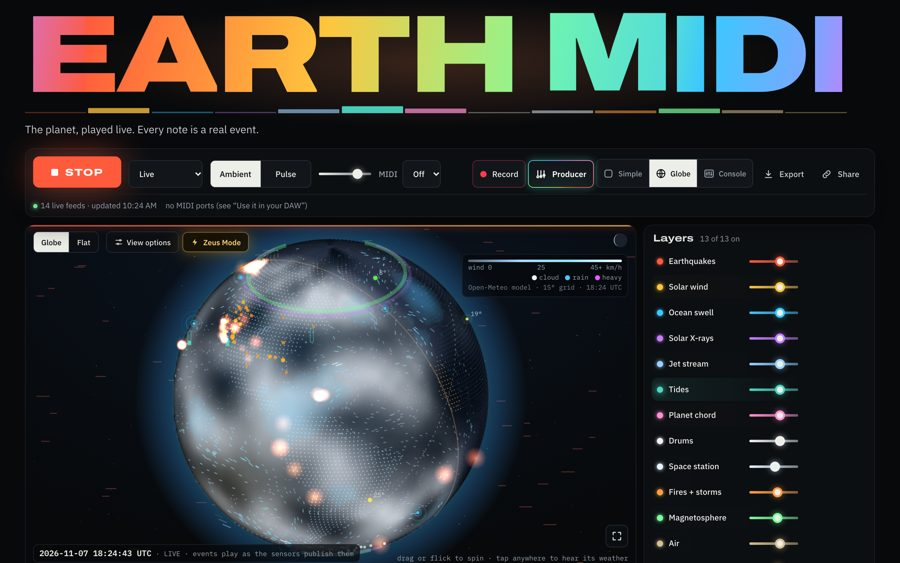
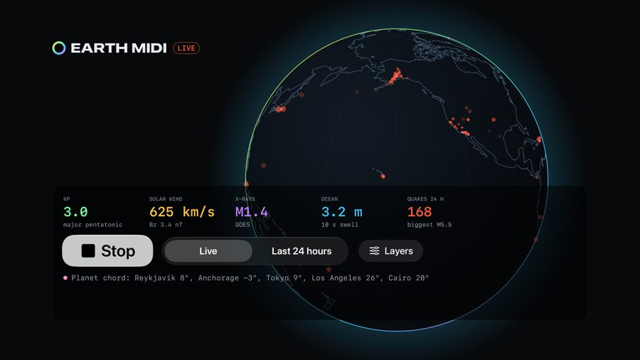

Press kit
Everything you need to write about Earth MIDI or show it. Free to use in coverage.
In one paragraph
Earth MIDI turns the living planet into music, live. Every earthquake rings a bell pitched by its depth and struck as hard as its magnitude. The solar wind sweeps a synth pad, ocean swell breathes at its real wave period, tides bend a drone, the jet stream howls and cities sing a chord tuned to their temperature right now. The planet's magnetic weather even picks the musical scale. It plays in any browser at earthmidi.com and as free apps for iPhone, iPad, Mac and Apple TV, and sends everything as MIDI so producers can play the planet through their own instruments. Data comes from USGS, NOAA, NASA and Open-Meteo. No active AI: every note comes from a published sensor reading through the same rule every time.
Short version
Earth MIDI: the planet, played live. Earthquakes, solar wind, ocean swell and more, turned into sound and MIDI as they happen. earthmidi.com
Logo


Screenshots








Video
Download the 9:16 story video (MP4, 20 MB)
Credit line
Anyone can use recordings and exports in their own work, free, with this credit:
Planetary data sonified with Earth MIDI by Colin Robinson · earthmidi.com
Embed the player
Paste this into an article or blog to show a small live player:
<iframe src="https://earthmidi.com/#embed" width="100%" height="420" style="border:0;border-radius:12px" allow="autoplay; midi" title="Earth MIDI live player"></iframe>
Contact
hello@earthmidi.com